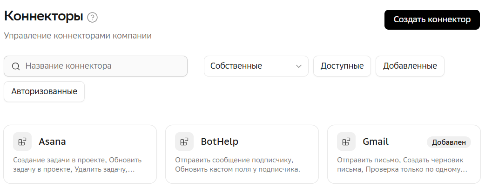

Коннекторы
В разделе  Администрирование → Коннекторы можно определять, какие коннекторы будут доступны пользователям для подключения в разделе Коннекторы. А так же настраивать инструменты коннекторов.
Администрирование → Коннекторы можно определять, какие коннекторы будут доступны пользователям для подключения в разделе Коннекторы. А так же настраивать инструменты коннекторов.
Быстрый старт по добавлению коннекторов
Для работы пользователям можно добавить предустановленные коннекторы или создать подключение к сторонним MCP-коннекторам.
Добавление предустановленных коннекторов
-
При необходимости Авторизуйтесь в коннекторе.
Добавление MCP-коннектора
-
При необходимости Авторизуйтесь в коннекторе.
-
Настройте инструменты коннектора. Настройка возможна только для авторизованных MCP-коннекторов.
Просмотр коннекторов

Коннекторы в разделе отображаются в виде карточек.
Их можно найти по названию и отфильтровать по типу и статусу.
-
Собственные — подключенные собственные MCP-коннекторы.
-
Системные — предустановленные коннекторы.
-
Доступные — невидимые для пользователей коннекторы, которые можно добавить в систему.
-
Добавленные — видимые для пользователей коннекторы, в которых они могут авторизоваться и использовать в чате.
-
Авторизованные — видимые и авторизованные администратором коннекторы. Уже готовые к использованию в чате.
Доступные коннекторы и их возможности
Список коннекторов, которые администратор может добавить пользователям, и их возможности читайте в главе Возможности и особенности подключения коннекторов.
|
Коннектор наследует разрешения аккаунта внешней системы, с помощью которого в нем авторизовались. Например, если пользователь CRM может только читать карточки клиентов, то и через коннектор будет доступно только чтение — без возможности редактирования или создания. Дополнительно ограничить права коннектора можно с помощью инструментов коннектора. |
Создание подключения к MCP-коннектору
Вы можете подключить собственный MCP-коннектор и сделать его доступным для работы пользователям.
| Подключаемые MCP-коннекторы и их сервера должны следовать обязательным требованиям (MUST) и рекомендациям (SHOULD) официальной спецификации MCP: https://modelcontextprotocol.io/specification. |
-
В разделе
Администрирование → Коннекторы нажмите Создать коннектор. -
Укажите:
-
Название.
-
Описание — коротко опишите возможности и инструменты коннектора, какие основные задачи он решает. По этим клюевым фразам ИИ-агент будет понимать, что необходимо подключить данный коннектор. Например, Добавь событие в календарь — для коннектора календаря. Описание отображается в карточке коннектора.
-
Адрес MCP-сервера — в формате
https://mcp.example.ru/mcp.Для коннектора 1C укажите в поле URL базы 1C. -
Тип подключения — выберите протокол соединения, который поддерживает ваш MCP-сервер.
-
Тип аутентификации — выберите тип аутентификации вашего MCP-сервера.
-
Никакой — пользователь авторизуется в коннектор без ввода данных.
-
Логин и пароль— пользователь указывает логин и пароль.
-
Токен доступа — пользователь указывают токен доступа.
-
Пользовательские заголовки — позволяет добавить произвольные поля на форму авторизации. Для добавления нового поля нажмите
 Добавить заголовок.
Добавить заголовок.
-
-
Инструкция авторизации — Укажите инструкцию-подсказку по авторизации в коннекторе. Инструкция будет видна пользователям при наведении на иконку информации
 рядом с кнопкой авторизации в коннекторе.
рядом с кнопкой авторизации в коннекторе.
Чтобы созданный MCP-коннектор был доступен пользователям, его необходимо добавить.
Добавление коннектора
| Добавление предустановленного коннектора 1C отличается от других. Подробнее. |
Пользователи видят только добавленные администратором коннекторы. Они могут в них авторизовываться и использовать в чате.
Администрирование → Коннекторы:-
Выберите фильтр Доступные — отобразятся доступные для добавления коннекторы.
-
Нажмите на карточку коннектора.
-
В окне коннектора при необходимости включите или выключите нужные инструменты.
-
Нажмите Добавить или Добавить и войти в аккаунт, чтобы добавить и одновременно авторизоваться в коннекторе.
| Если коннектор добавлен, но администратор не авторизовался в нем, то для использования пользователям самим необходимо будет авторизоваться в нем. |
Авторизация в коннекторе
Коннекторы можно использовать как с единой учетной записью для всех пользователей, так и дать пользователям возможность авторизовываться самостоятельно.
Для использования коннектора с единой учетной записью, в нем необходимо авторизоваться администратору в разделе Администрирование → Коннекторы. Такой коннектор будет сразу доступен всем пользователям — им не придется авторизовываться в нем самостоятельно.
Для самостоятельной авторизации пользователями, достаточно просто добавить коннектор. Далее каждый пользователь самостоятельно авторизуется в разделе Коннекторы.
| Некоторые коннекторы для авторизации требуют дополнительных действий. Подробнее в главе Особенности подключения коннекторов. |
Администрирование → Коннекторы:-
Выберите фильтр Добавленные и нажмите на карточку нужного коннектора.
-
Нажмите Войти в аккаунт — откроется форма авторизации. У каждого коннектора своя форма авторизации.
-
Укажите данные для авторизации и нажмите Продолжить.
| Во время авторизации могут появляться всплывающие окна. Убедитесь, что ваш браузер не блокирует их. |
| После авторизации администратором, все пользователи переходят на использование коннектора под его единой учетной записью — даже те, кто до этого авторизовывался индивидуально. Снова авторизоваться индивидуально в таком коннекторе не получится. |
Выход из аккаунта коннектора
Для выхода из аккаунта коннектора, в разделе Администрирование → Коннекторы откройте карточку коннектора и нажмите Выйти из аккаунта — коннектор станет недоступен для новых и текущих задач.
Удаление коннектора из добавленных
Для того чтобы убрать коннектор из добавленных для пользователей, в разделе Администрирование → Коннекторы откройте добавленный коннектор и нажмите Убрать — коннектор станет недоступен для новых и текущих задач.
Удаленный коннектор затем снова можно добавить.
Настройка инструментов коннектора

Инструменты коннектора — это список его возможностей. У каждого коннектора свои инструменты, и по умолчанию все они включены. Возможности коннектора можно ограничить, выключив его инструменты.
| Инструменты предустановленных коннекторов отображаются после их добавления, инструменты созданных MCP-коннекторов отображаются после авторизации. |
-
Администратор (в разделе
Администрирование → Коннекторы) задает общий набор инструментов, доступных пользователям, и может отключать любые из них. -
Пользователь (в разделе Коннекторы) настраивает только те инструменты, которые администратор включил. Если инструмент выключен администратором, пользователь не может его активировать.
Для настройки инструментов коннектора администратором, откройте добавленный коннектор и включите или выключите необходимые инструменты.
WARNING: При этом инструменты коннектора поменяются и у пользователей, независимо от того, авторизованы они в коннекторе или нет.